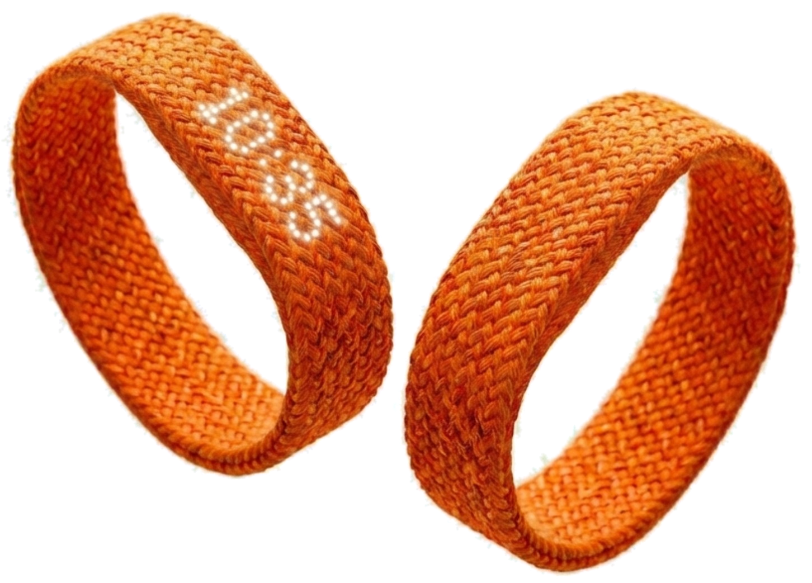
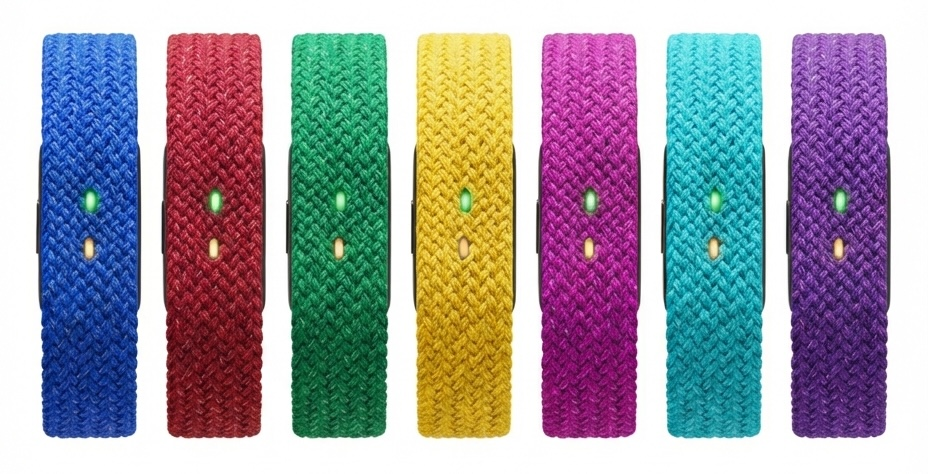
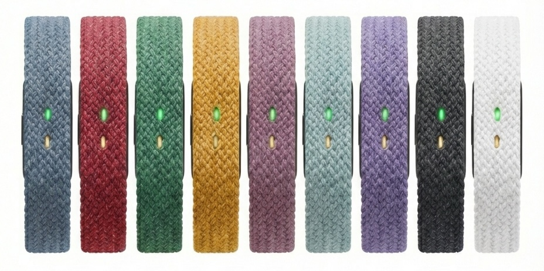

Introducing SmartLoop
The screen-free smart band that monitors your health and sleep — enriched by your voice. Log meals, mood, symptoms, or capture any thought on the go. AI connects the dots between what you share and what your body reveals.

SmartLoop captures what sensors can't — your thoughts, your meals, your mood. One tap starts a voice log. AI organizes everything. The iPhone app reveals the full picture of your wellbeing.
Every feature serves a purpose. Nothing more, nothing less.
Tap once to record. Log your meals, supplements, water intake, mood, energy levels, work accomplishments — anything worth remembering. SmartLoop's AI transcribes, categorizes, and correlates your voice entries with biometric data automatically.
No screen means no distractions. Two subtle RGB LEDs communicate everything you need to know — at a glance, without pulling you out of the moment.
Your band collects. The app analyzes. See correlations between what you eat, how you sleep, and how you feel. AI-generated insights help you optimize your daily routines.
Weighing almost nothing, SmartLoop disappears on your wrist at night. Track sleep stages, heart rate variability, and recovery — without the bulk of traditional trackers.
Tesla digital key on your wrist. 50m water resistance for surfing, swimming, and diving. Quick voice memos when you need them. SmartLoop fits seamlessly into your active lifestyle.
All the tracking you expect. Plus the context only you can provide.
SmartLoop continuously tracks everything a modern fitness tracker does — heart rate, HRV, blood oxygen, skin temperature, sleep stages, steps, and workouts. All day. All night. No interaction needed.
Press the button to add what sensors can't capture. "Just had oatmeal for breakfast." "Feeling stressed." "Took my vitamins." Your voice logs are transcribed and timestamped alongside your biometric data.
AI combines your objective sensor data with your subjective voice logs to reveal insights you'd never find otherwise. See how caffeine affects your sleep. Learn what triggers your energy dips. Make informed decisions.
SmartLoop turns your words into wellness insights. Four powerful voice modes, one simple tap.
Track meals, water, supplements, and medications effortlessly. Just say what you consumed — "Had a salad with grilled chicken for lunch" or "Took my vitamins and 2 liters of water today." AI extracts nutritional data automatically.
Capture how you feel throughout the day. Log stress levels, energy dips, emotional states, and sleep quality. Over time, SmartLoop correlates your mood patterns with biometric data to reveal what affects your wellbeing.
Log symptoms, sleep quality, and daily context that sensors can't capture. "Woke up with a headache," "Stressful day at work," or "Slept poorly last night." This context helps AI understand patterns behind your biometric data.
Control SmartLoop with your voice. Start any workout, set interval timers, mark laps, or end sessions — all without touching your phone or the band.
Medical-grade sensors work silently on your wrist, capturing the vital signs that tell the story of your health.
PPG (photoplethysmography) sensors use green LED lights to measure blood flow continuously. Track your resting heart rate, active heart rate zones, and see how your cardiovascular health improves over time.
HRV measures the variation between heartbeats — a key indicator of autonomic nervous system balance. Higher HRV typically indicates better recovery, lower stress, and improved fitness. SmartLoop tracks HRV during sleep for accurate readings.
Pulse oximetry measures oxygen saturation in your blood. Normal levels are 95-100%. SmartLoop monitors SpO2 during sleep to detect potential breathing irregularities and during workouts to track respiratory efficiency.
Continuous temperature monitoring detects deviations from your personal baseline. Elevated temperatures can indicate oncoming illness, while cyclical patterns help track ovulation and menstrual cycles with precision.
Motion sensing tracks steps, detects workout types automatically, measures sleep movements, and identifies sedentary periods. The accelerometer also enables tap gestures and fall detection for emergency alerts.
Combining heart rate, HRV, movement, and temperature data, SmartLoop identifies sleep stages — light, deep, and REM. Understand your sleep quality, not just quantity, and see how lifestyle choices affect your rest.
The magic happens when objective biometric data combines with your subjective voice logs.
Traditional wearables show you numbers — steps taken, calories burned, hours slept. But numbers without context are just noise. SmartLoop's AI correlates your sensor data with what you tell it: what you ate, how you felt, what stressed you out, what made you happy.
The iPhone app's AI engine analyzes patterns across days, weeks, and months. It learns YOUR body's unique responses. Maybe your HRV drops after eating dairy. Perhaps your sleep quality improves when you exercise before 3pm. SmartLoop finds these connections automatically.
Beyond insights, SmartLoop offers personalized recommendations based on your combined data. "Your heart rate variability has been low this week. Consider reducing caffeine — you logged 4 coffees yesterday." Health coaching that actually knows you.
Jewelry-grade craftsmanship meets invisible technology.
Inspired by Apple's braided watch bands, SmartLoop uses premium woven material that's soft against skin, breathable during workouts, and elegant enough for any occasion. No silicone. No rubber. No compromise.
Stretch-fit construction eliminates clasps and buckles entirely. Slide it on, slide it off. The band hugs your wrist without pressure points — perfect for 24/7 wear including sleep tracking.
The slim electronics module clicks in and out of the band. Swap colors in seconds. Machine wash the textile portion. The tech stays safe while the band stays fresh.
At just 14mm wide — about 30% narrower than typical fitness bands — SmartLoop looks more like a minimalist bracelet than a fitness tracker. Subtle. Sophisticated. Unmistakably intentional.
Features that make SmartLoop indispensable.
Walk up. Door unlocks. No phone needed. SmartLoop integrates with Tesla's digital key system for seamless vehicle access.
Hard fall? Unusual heart pattern? SmartLoop can automatically alert your emergency contacts with your location when it detects a critical event.
Capture quick thoughts and reminders when your phone isn't handy. Voice memos are saved in the SmartLoop app for easy access later.
50 meters water resistance means surfing, swimming, diving — SmartLoop handles it all. Track your laps. Log your sessions. Never take it off.
Gentle haptic vibrations wake you without disturbing your partner. Set alarms for medication, hydration reminders, or focus sessions.
Up to a full week of continuous tracking, voice logging, and smart features. Quick magnetic charging gets you back to 100% in under an hour.
Two distinct lines. Sixteen colors. One perfect fit.
Bold colors that make a statement. Express yourself.

Timeless neutrals that pair with everything.

Available in 12 sizes from 130mm to 215mm wrist circumference. Our fine-tuned range ensures a snug, comfortable fit for virtually any wrist — from petite to large. The SmartLoop app includes a simple measuring guide to help you find your perfect size.
The details that matter.
Join thousands who've already signed up for early access. Be among the first to experience the future of wearable health tracking.
No spam. Just updates on launch and exclusive early access.